A major scholar Ibn Ashur who authored a massive tafsir and an expert on Maliki fiqh commented on why slavery was allowed
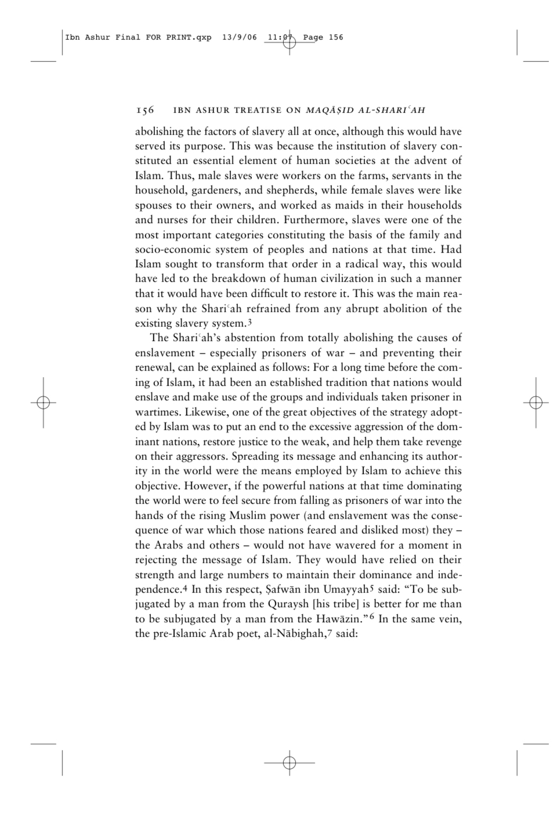
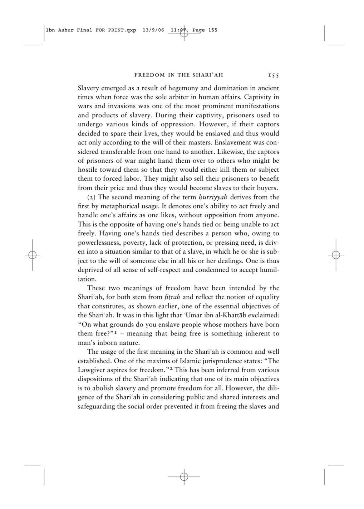
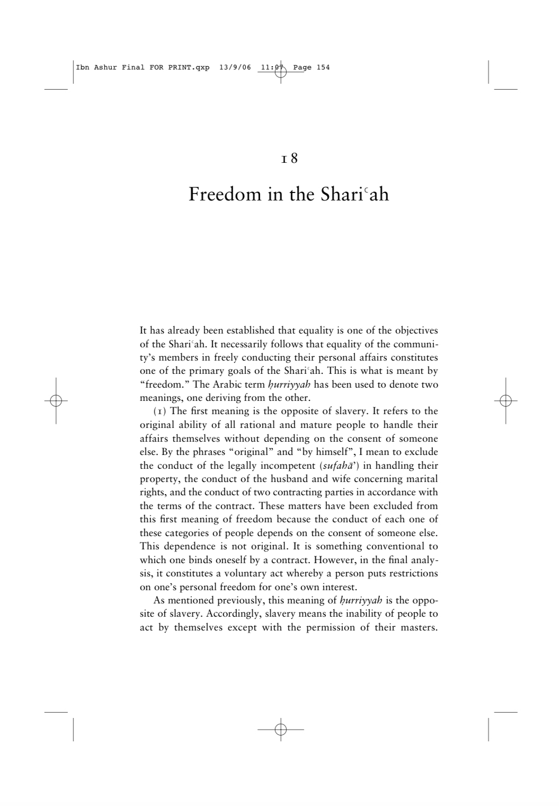
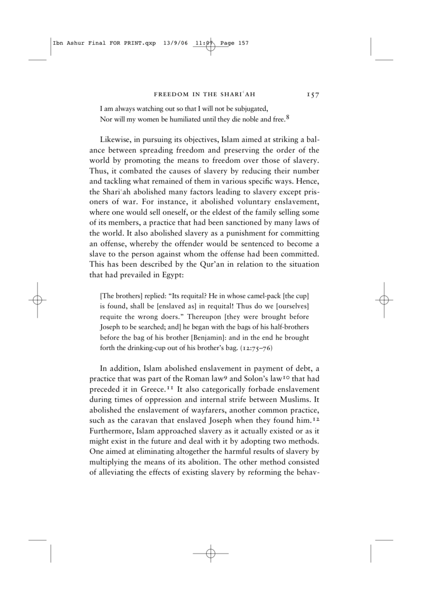
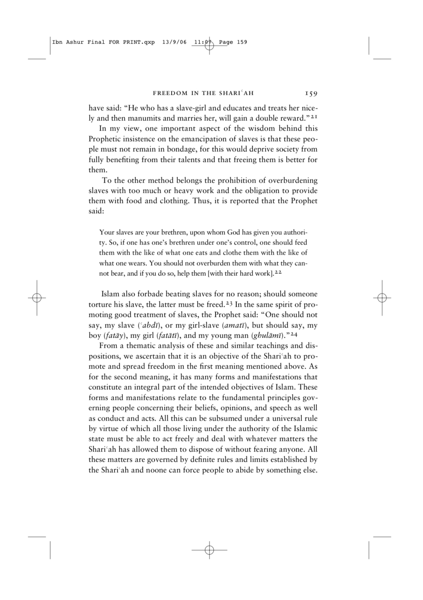
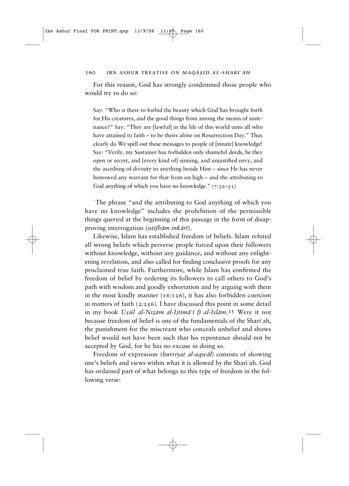
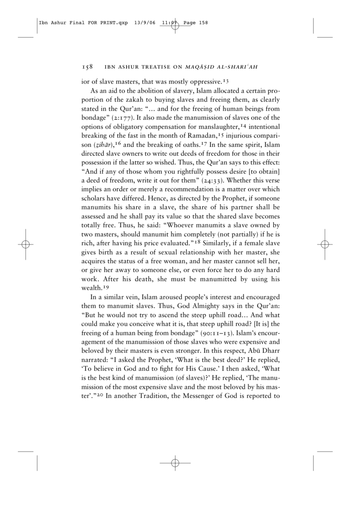
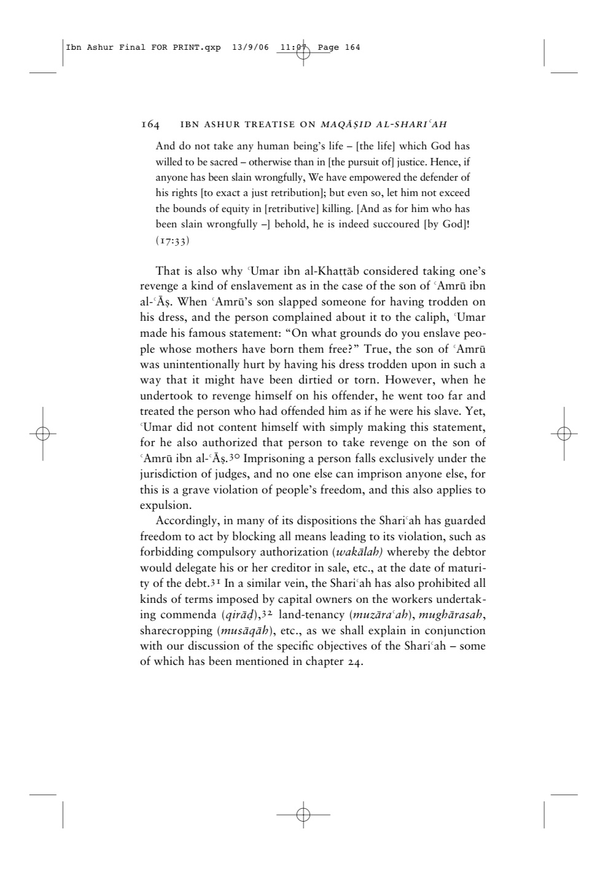
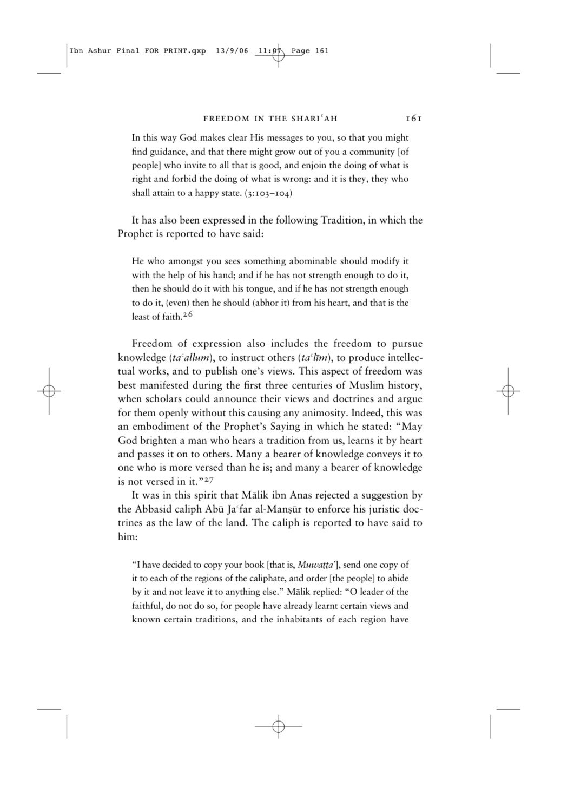
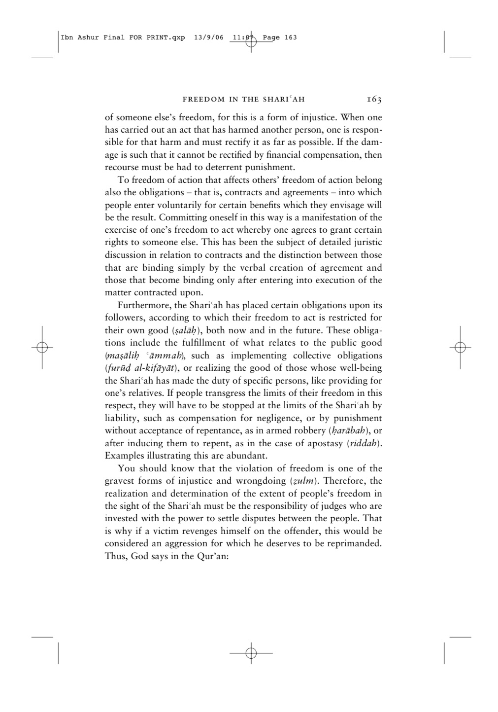
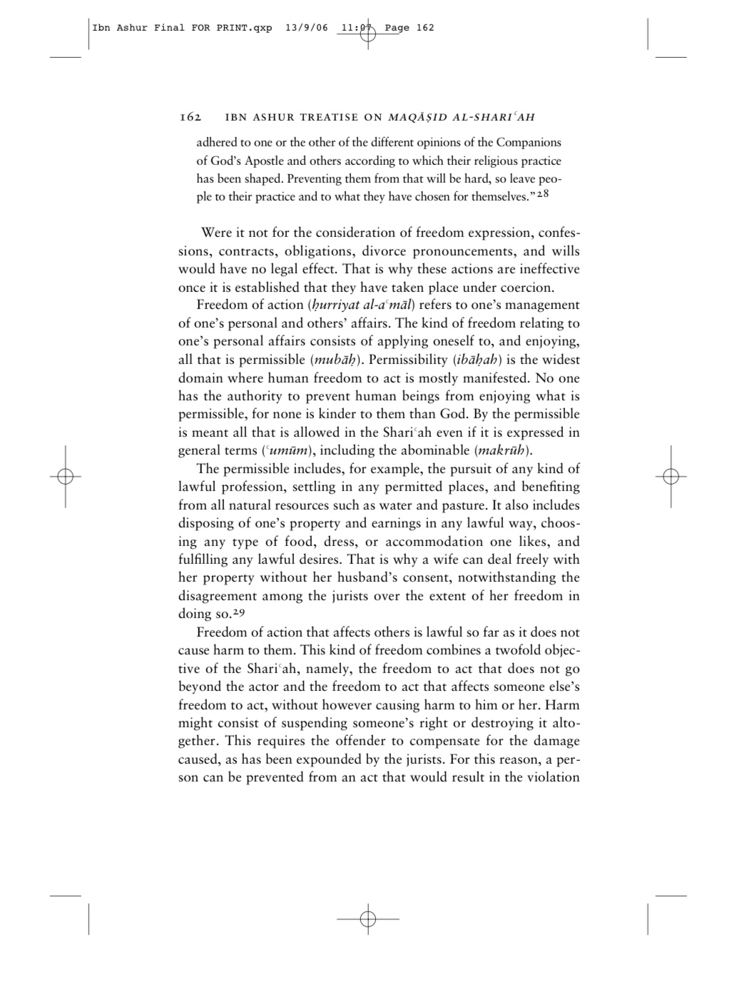
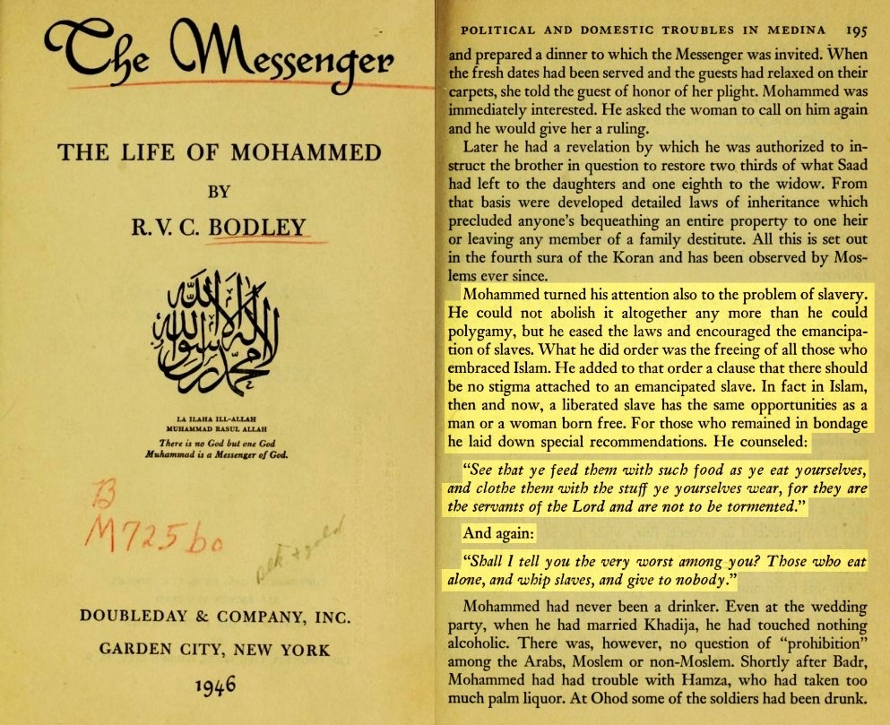
https://rattibha.com/thread/1302199353528983552
The reason why slavery was allowed was because
Getting rid of slavery off the bat would place huge burden on the economy of Arabia
The slaves and foreigners wouldn’t be able to survive long without aid from their masters
Some slaves had a debt to pay due to war crimes
Slaves actually received higher positions and even ruled empires due to their slavery (see the Mamluk empire as an example)